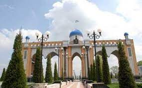
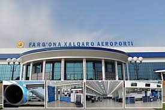
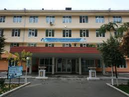

Jizzax |
|||||
| Jizzax |
Jizzax
|
||||
| Toshkent | |||||
| Buxoro | |||||
| Samarqand | |||||
| Navoiy | |||||
| O'zbekiston | |||||
| Jizzax | |||||
| Xorazm | |||||
| Namangan | |||||
| Qashqardaryo | |||||
| Sirdaryo | |||||
| Surxandaryo | |||||
| Andijon | |||||
Fargʻona viloyati Vikipediya, ochiq ensiklopediya Navigatsiya qismiga oʻtishQidirish qismiga oʻtish Bu atamaning boshqa maʼnolari ham mavjud. Qarang: Fargʻona viloyati (maʼnolari). Fargʻona viloyati viloyat Maʼmuriy markazi Fargʻona Yirik shaharlari Fargʻona, Qoʻqon, Margʻilon, Quvasoy Asos solingan sanasi 1938-yil Hokim Xayrulla Bozorov Rasmiy tillar oʻzbekcha Aholi (2020) 3,817,000 (2-oʻrin) Zichligi 474,88 kishi./km² Dinlar tarkibi musulmonlar, xristianlar Maydoni 6 800 km² (10-oʻrin) Fargʻona viloyati xaritada Fargʻona viloyati, Xarita Soat mintaqasi UTC+5 Kod ISO 3166-2 UZ-FA Avtomobil raqami kodi 40 - 49 (2008-yildan) Rasmiy sayti http://ferghana.uz/ (oʻzb.) Koordinatalari: 40°25′48″N 71°21′0″E G O Fargʻona viloyati — Oʻzbekiston Respublikasi tarkibidagi viloyat. 1938-yil 15-yanvarda tashkil etilgan. Respublikaning sharqida, Fargʻona vodiysining janubida joylashgan. Shimoldan Namangan, Andijon viloyatlari, janub va sharqdan Qirgʻiziston, gʻarbdan Tojikiston Respublikalari bilan chegaradosh. Maydoni 6,8 ming km2. Aholisi 2020-yilda 3,817,000 kishi. Tarkibida 15 tuman, 9 shahar (Beshariq, Margʻilon, Rishton, Fargʻona, Yaypan, Quva, Quvasoy, Qoʻqon, Hamza), 10 shaharcha, 164 qishloq fuqarolari yigʻini bor (2004). Markazi — Fargʻona shahri. Mundarija 1 Tarixi 2 Hududiy boʻlinishi 2.1 Shaharlar 2.2 Tumanlari 3 Tabiati 4 Aholisi 5 Xoʻjaligi 6 Qishloq xoʻjali 7 Transporti 8 Ijtimoiy soha 8.1 Maorifi va madaniyati 8.2 Sogʻliqni saqlash 8.3 Sport 9 Adabiyoti 10 Matbuoti, radioeshittirishi va televideniyesi 11 Meʼmoriy yodgorliklari 12 Manbalar 13 Adabiyotlar Tarixi Xudoyorxon oʻrdasi Fargʻona darvozasi Fargʻona xalqaro aeroporti Fargʻona viloyati Oʻzbekistonning qadimgi madaniyat oʻchoqlaridan biri. Viloyat hududida topilgan tosh davri manzilgohlari va qoyatoshlariga solingan suratlar vodiyda odamlar eng qadimgi davrlardan beri yashab kelganliklaridan darak beradi. Fargʻona viloyatining tosh davri yodgorliklarini 1954-yil A.P. Okladnikov rahbarligidagi arxeologiya otryadi oʻrgangan. Vodiyning sharqiy qismidagi Qayroqqum, Xoʻjagʻor va Uchqoʻrgʻon makonlaridan mustye davriga oid tosh qurollar topildi. Vodiyning gʻarbiy qismidagi qadimgi tosh davri madaniyatiga oid manzilgohlar mustye davridagi Qalʼacha, Jarqoʻton va Qapchigʻay tosh qurollar ishlash ustaxonalari topilib oʻrganildi. 1958-yil birinchi marta Markaziy Fargʻonadan mezolit davriga oid mikrolit tosh qurollari topildi. Shuningdek, Markaziy Fargʻonadagi Uzunkoʻl va Tayloqkoʻl atroflaridan mezolit va neolit davrlariga oid 24 ta manzilgoh borligi aniqlandi (1965). Soʻx vohasidagi 28 gʻor va ungurlar (Selungur, Eshma, Obishir, Sur, Bel, Zim, Ovikambar, Bogʻishim va boshqalar) roʻyxatga olindi. Obishir gʻorlaridagi madaniy qatlam yaxshi saklangan. Gʻorlarni qazish jarayonida mezolit davriga oid tosh qurollar, xayvon suyaklari topilgan. Bular oʻsha davr turmushini oʻrganish imkonini beradi. 1967 va 1969—70 yillarda Sankt-Peterburgdagi Ermitaj muzeyi xodimlari mezolit va neolit davrlariga oid 35 ta manzilgoh topdilar. Fargʻona viloyatining arxeologik yodgorliklarini oʻrganishda Katta Fargʻona kanalining qazilishi muhim ahamiyatga ega boʻldi. Kanalni qazish jarayonida jez davri, quldorlik va zamindorlik jamiyatlariga oid yodgorliklar topildi va tekshirildi. Quva va Toshloq tumanlari oʻrtasidagi Akbarobod qishlogʻida jez davriga oid manzilgoh, Margʻilonsoyning chap sohilida Oqtom qabristoni boʻlganligi aniqlandi. Fargʻona viloyatining Quva tumanida quldorlik davriga oid Taxyontepa, Fargʻona shahrida Simtepa (Chimtepa) kabi yodgorliklar topib oʻrganilgan. Ayniqsa, Quva shahridagi miloddan avvalgi 5-asr va oʻrta asr boshlariga oid topilmalar yaxshi tekshirilgan. 10-11-asrlarga doir tarixiy manbalarda bu shahar obodligi va kattaligi jihatidan vodiyda Axsikatdan soʻng eng yirik shahar deb qayd qilingan. Arxeologik materiallar Margʻilon shahri 10-asrda katta qishloq boʻlib, 11-12-asrlarda shaharga aylanganligini, Rishton esa 10-asrda katta shahar boʻlsa ham, 11-12 asrlarga kelib qishloq qiyofasiga kirib qolganligini isbotlaydi. Oʻtroq dehqonchilik, chorvachilik bilan shugʻullangan Chust madaniyatiga oid manzilgohlardan topilgan yodgorliklar Fargʻona vodiysini oʻrganishda muhimdir. U yerda ishlab chiqarish kuchlari va xoʻjalikning taraqqiyoti jez davrining oxirida dehqonchilik qabilalarining ijtimoiy tuzumida oʻzgarish yuz berishiga, natijada ibtidoiy tartiblar tugab, jamiyatdagi tabaqalanishga olib kelgan. Roʻzgʻor anjomlarida xususiy mulkchilik kurtaklari koʻzga tashlanadi. Arxeologik tekshirishlar natijasi Fargʻona viloyatida qadimdan odamlar yashab, ovchilik, dehqonchilik, chorvachilik bilan shugʻullanganligidan, kishilik jamiyatining keyingi bosqichlarida esa madaniyat rivojlana boshlaganligidan dalolat beradi. Hududiy boʻlinishi Fargʻona viloyati hududiy jihatdan 15 ta tuman va 4 ta shaharga boʻlingan. Shaharlar Fargʻona viloyatiga bevosita boʻysunadigan quyidagi 4 ta shahar mavjud: Fargʻona[1] Qoʻqon[2] Margʻilon[3] Quvasoy[4] Tumanlari Fergana districts.png Tuman nomi Tuman markazi 1 Oltiariq tumani Oltiariq 2 Bagʻdod tumani Bagʻdod (shaharcha) 3 Beshariq tumani Beshariq 4 Buvayda tumani Buvayda 5 Dangʻara tumani Dangʻara 6 Fargʻona tumani Vodil 7 Furqat tumani Navbahor (qishloq) 8 Qoʻshtepa tumani Langar (qishloq) 9 Quva tumani Quva 10 Rishton tumani Rishton 11 Soʻx tumani Ravon (qishloq) 12 Toshloq tumani Toshloq 13 Uchkoʻprik tumani Uchkoʻprik 14 Oʻzbekiston tumani Yaypan 15 Yozyovon tumani Yozyovon Tabiati
Fargʻona viloyatining shimoliy qismini Qoraqalpoq va Yozyovon dashtlari egallagan, janubdan Olay tizmasidan oqib tushadigan daryolarning yoyilmalari bilan oʻralgan. Janubda adirlar Olay tizmasining togʻ oldilari bilan almashinib turadi. Fargʻona viloyati yuqori seysmik zona hisoblanadi. Iqlimi kontinental. Qishi birmuncha yumshoq, baʼzan havo juda sovib ketadi. Yanvar oyining oʻrtacha harorati — 3,2 °C, iyulniki 28 °C. Eng past harorat —27,9 °C. Eng yuqori harorat 42 °C. Vodiyning gʻarbida esadigan kuchli „Qoʻqon shamoli“ iqlimga salbiy taʼsir etadi. Shamolning tezligi sekundiga baʼzan 35–40 metrga yetadi. Janubi-sharqida yozda garmsel esadi. Yiliga gʻarbida 100 mm dan (Qoʻqon atrofi) sharqiy qismida 170 mm gacha, togʻ yon bagʻirlarida 270 mm gacha yogʻin tushadi, asosan, bahorda yogʻadi. Vegetatsiya davri 210—240 kun. Viloyatning shimoli-gʻarbiy chegarasi boʻylab Sirdaryo oqadi. Olay tizmasidan Isfara, Soʻx, Shohimardon, Isfayramsoy boshlanadi. Daryolar muzlikqor suvlaridan toʻyinadi. Iyul— avgustda toʻlib oqadi. Daryo suvlari sugʻorishga sarflanadi. Asosan, boʻz tuproq va oʻtloqi botqoq tuproklar keng tarqalgan. Adirlarda aksari och va tipik boʻz tuproqlar, Sirdaryo terrasalarida allyuvialoʻtloqi tuproqlar, viloyatning shimoliy qismida shoʻrxok oʻtloqlar va ajriqli oʻtloqlar mavjud. Markaziy Fargʻonadagi shoʻrxoklarda turli xil shoʻra oʻsadi. Yerlarining kattagina qismi ekinzor. Vohalarda terak, tut, qayragʻoch, daryo vodiylarida keng bargli oʻrmonlar va archazorlar bor. Yovvoyi hayvonlardan Sirdaryo toʻqayzorlarida qobon, adir va Olay tizmasi togʻ oldilarida boʻri, tulki, chiyaboʻri, quyon, boʻrsiq, jayra yashaydi. Ondatra, nutriya iklimlashtirilgan. Qushlar, sudraluvchilar koʻp. Suv havzalarida marinka, usach, zogʻora baliq, karp, oq amur, doʻngpeshona baliqlar bor. Aholisi Aholisi, asosan, oʻzbeklar, shuningdek, tojik, rus, qirgʻiz, tatar va boshqa millat vakillaridan tashkil topgan. Aholining oʻrtacha zichligi 1 km2 ga 413,9 kishi. Shahar aholisi 2.2 million kishi, qishloq aholisi 1.7 million kishi (2022)[manba?]. Xoʻjaligi Viloyat hokimligi Fargʻona viloyati respublikaning sanoati rivojlangan viloyatlaridan. Viloyatda 86 ta yirik sanoat korxonasi mavjud. Sanoatining yetakchi tarmoqlari: yoqilgʻienergetika, kimyo, mashinasozlik, qurilish materiallari, paxtani tozalash va qayta ishlash, yengil va oziqovkat sanoati va boshqa Energetika bazasi, asosan, issiqlik elektr styalardan iborat boʻlib, eng yiriklari: Fargʻona, Qoʻqon issiqlik elektr markazlari, Quvasoy issiqlik elektr styasi. Barcha styalar Oʻrta Osiyoning yagona energetika tizimiga birlashtirilgan. Kimyo sanoatining eng yirik korxonalari Fargona va Qoʻqon shaharlarida joylashgan. „Azot“ ishlab chiqarish birlashmasi, kimyoviy tolalar, furan birikmalari kimyo zavodlari, Qoʻqon superfosfat zavodi va boshqalar shular jumlasidandir. Viloyatda Fargʻona neftni qayta ishlash zavodi joylashgan. Qurilish materiallari sanoati rivojlangan. Quvasoydagi sement zavodi respublikada ishlab chiqariladigan sementning toʻrtdan bir qismidan koʻprogʻini beradi. Quvasoyda shifer, gisht va boshqa qurilish materiallari, shisha va chinni idishlar zavodlari ishlab turibdi. Qoʻqondagi „Elektromash“, „Tekstilmash“ va boshqa metallsozlik zavodlarida sanoatning boshqa tarmoqlari uchun asbobuskunalar, ehtiyot qismlar ishlab chiqariladi. Oziq-ovqat sanoati yil sayin rivojlanmoqda. Bu tarmoq korxonalarida turli nav yogʻlar, un, non, makaron, konserva va boshqa mahsulotlar ishlab chiqariladi. Viloyatda 84 qoʻshma korxona, 22 mingdan ortiq kichik korxona faoliyat koʻrsatadi. Fargʻona shahrida „Nodira“, „PSMK3“, „Polina“; Margʻilonda „Margʻilon tongi“ va Qoʻqonda „Zilola“ kichik korxonalar, „Oʻzsalaman“, „KabulFargʻona“, „Besteks“, „Ishonch“ qoʻshma korxonalari ishlab turibdi. Qishloq xoʻjali Qishloq xoʻjaligining asosiy tarmoklari — paxtachilik, gʻallachilik, pillachilik, bogʻdorchilik va chorvachilik. Viloyatdagi barcha ekin maydoni 288,9 ming ga, shu jumladan, 129,6 ming ga yerga don, 115,9 ming ga yerga paxta, shuningdek, texnika ekinlari, 11,7 ming ga yerga sabzavot va poliz ekinlari, 24,1 ming ga yerga ozuqa ekinlari ekiladi. 20,3 ming ga yaylovlar (2004). Haydaladigan yerlarda, asosan, obikor dehqonchilik bilan shugʻullaniladi. Paxta, bugʻdoy, sholi, makkajoʻxori, arpa, kartoshka, sabzavot va poliz maxsulotlari yetishtiriladi. Bogʻlarda koʻproq oʻrik oʻstiriladi. Anor, anjir, olma, xurmo koʻp. Tokzorlarda yuqori navli uzumdan moʻl hosil olinadi. Sugʻoriladigan yerlar viloyat hududidan oʻtuvchi Katta Fargʻona va Andijon kanallari, Janubiy Fargʻona kanali, Shohimardonsoy, Margʻilonsoy, Soʻx, Isfayramsoy, shuningdek, Karkidon, Koʻrgʻontepa suv omborlari yordamida sugoriladi. Viloyatda 8 mingdan ortiq fermer xoʻjaligi, 143 shirkat xoʻjaligi, 74 xoʻjaliklararo korxonalar, 6 parrandachilik fabrikasi mavjud. Chorvachilikda qoramol, qoʻy va echki, parranda boqiladi. Viloyat jamoa va shaxsiy xoʻjaliklarida 511,9 ming qoramol (shu jumladan, 213,2 ming sigir), 431 ming qoʻy va echki, 1260,9 ming parranda bor (2004). Transporti Temir yoʻl uzunligi 227,8 km. Avtomobil yoʻllarining uzunligi 8,6 ming km, shu jumladan, qattiq qoplamali yoʻllar 8,5 ming km. Asosiy yoʻnalishlari: Toshkent — Qoʻqon — Andijon, Margʻilon — Qoʻqon — Navoiy, Qoʻqon — Margʻilon — Quva. Fargʻona shahrida yirik aeroport ishlab turibdi. Ijtimoiy soha Maorifi va madaniyati Fayl:Fargʻona Davlat Universiteti.jpeg Fargʻona Davlat Universiteti Viloyatda 4 oliy oʻquv yurti boʻlib, 18,9 mingdan ortiq talaba, 910 umumiy taʼlim maktabi (690 mingga yaqin oʻquvchi), 8 gimnaziya (7,3 ming oʻquvchi), 47 litsey (16,3 ming oʻquvchi), musiqa va sport maktablari ishlab turibdi. Xalq taʼlimi sohasida chet el investorlari bilan aloqa bogʻlanib „Mersi KO“ jamgarmasi, Osiyo taraqqiyot banki, Yaponiya grantlar dasturi asosida kompyuter va boshqa jihozlar olindi. Viloyat sportchi oʻquvchilari 2003—04 yillardagi „Umid nihollari“ sport musobaqalarida 2 va 3 oʻrinlarni egalladilar. Fargʻona viloyatida 77 kasbhunar kolleji, 3 akademik litsey faoliyat koʻrsatadi shuningdek 4 teatr, madaniyat uylari, 3 muzey, 193 klub muassasasi, 609 ommaviy kutubxona (603,6 ming nusxa asar) aholiga xizmat koʻrsatadi. Viloyatda 1998-yilda Fargʻoniyning 1200-yillik, 2000-yilda Burhoniddin Margʻinoniyning 910 yillik yubileylari oʻtkazildi. Sogʻliqni saqlash 97 kasalxonada 6,3 ming vrach va 31,9 ming oʻrta tibbiy xodim ishlaydi. 413 ambulatoriya poliklinikasi, 214 qishloq vrachlik punkti, 61 qishloq vrachlik ambulatoriyasi, 28 ta dispanser bor. Dam olish uylari va „Chimyon“, „Oʻzbekiston“, „Qiziltepa“, „Nurafshon“, „Temir yoʻlchi“ sanatoriylari, tez tibbiy yordam viloyat boʻlimi bor.
Sport Fargʻona viloyatida „Universiada 2004“ sport musobaqalari oʻtkazildi. 2004-yildan boshlab viloyatda sportning suv polosi va sinxron suzish turlari yoʻlga qoʻyildi, seksiyalar tashkil etildi. Mavjud sport federatsiyalaridan tashqari qoʻl toʻpi, turon milliy yakka kurashi, sinxron suzish, armrestling kabi sport turlari boʻyicha sport federatsiyalari tuzildi. Fargʻona viloyatia jami 5135 sport inshooti mavjud. Shuningdek, Fargʻona Olimpiya zaxiralari sport kollejida dastlabki sport inshootlari ishga tushirildi. „Yoshlar madaniyat va sport majmuasi“, „Fargʻona“ markaziy stadioni, „Istiqlol“ tennis majmuasi, ot sporti maktabi, „Kimyogar“ sport majmuasi faoliyat koʻrsatadi. Sportning yunon-rim, qoʻl jangi, taekvondo, karate, shaxmat, shashka, boks, belbogʻli kurash, milliy kurash, turon milliy yakkakurashi, yengil atletika, mini futbol, voleybol turlari rivojlangan. Viloyat sportchilari 2004-yilda xalqaro sport musobaqalarida ishtirok etib 7 oltin va 4 kumush medallarga sazovor boʻlishdi. Ayniqsa, Koreya Respublikasida oʻtkazilgan boks boʻyicha yoshlar oʻrtasidagi Jahon chempionati, Qozogʻistonda armrestling, Yaponiyada baydarka va kanoe, Filippinda boks boʻyicha oʻtkazilgan Osiyo chempionatlarida viloyat sportchilari muvaffaqiyatli ishtirok etishdi. Yengil atletika boʻyicha oʻtkazilgan respublika sport musobaqalarida viloyat vakillari Ye. Tunguskova va Z. Abdullayevalar qatnashib respublika terma jamoasi tarkibiga kiritildi. Ogʻir atletika boʻyicha respublika chempionatida Ye. Sisoyeva oʻz vazni boʻyicha golib boʻldi. Shuningdek, Ye. Sisoyeva va B. Toshpoʻlatovalar 2004-yilda AQShda talabalar oʻrtasida ogʻir atletika boʻyicha oʻtkaziladigan chempionatga nomzod etib kiritildi. Nogironlar oʻrtasida stol tennisi boʻyicha oʻtkazilgan Oʻzbekiston chempionatida A. Ismatullayev gʻolib boʻlib, Jahon chempionatida ishtirok etish uchun Respublika terma jamoasi tarkibiga kiritildi. 2004-yilning avgust oyida Afinada oʻtkazilgan 28 yozgi Olimpiya oʻyinlarida Fargʻona viloyatining 5 sportchisi ishtirok etdi. 2004-yilda viloyatda basketbol boʻyicha xalqaro „Mersiko“ turniri, milliy va belbogʻ kurashi boʻyicha Hazrat Ali hamda Temirjon va Hamid polvonlar xotirasiga bagʻishlangan xalqaro turnirlarda respublika viloyatlari, 10 dan ortiq xorijiy davlat polvonlari katnashdi. Yil davomida oʻtkazilgan sport musobaqalarda ishtirok etib, viloyat sportchilari 250 dan ortiq medallarni qoʻlga kiritishdi. 15 sportchi sport ustasi normasini bajardi. Adabiyoti Fargʻona zamini koʻplab isteʼdodlar beshigi boʻlgan. Qoʻqon tarixiga oid baʼzi manbalarda 10-asrda Fargʻonada yozma adabiyot namunalari boʻlganligi qayd etilgan. Abu Tayyi Hoʻqandiy (10—11-asrlar) ijodi haqidagi maʼlumotlar buning yaqqol dalilidir. Biroq, oʻrta asrlar Fargʻona viloyati adabiyoti haqidagi manbalar juda kam. 18-asrdan boshlab Fargʻona vodiysi, xususan, Qoʻqonda fan, adabiyot va sanʼat rivoj topganligini koʻrish mumkin. Qoʻqon xonligi tashkil topishi va markazlashgan davlat sifatida faoliyat yuritishi xonlik hududida oʻziga xos adabiy muhitning shakllanishiga imkoniyat yaratdi. Bu davrda Huvaydo, Shoʻxiy, Akmal Xoʻqandiy, Nizomiy Hoʻqandiy kabi adabiyot namoyandalari ijod qildilar. Huvaydoning „Devon“i tarkibiga kirgan sheʼrlar va „Rohati dil“ dostoni xalq orasida mashhur boʻlgan. 19-asrda ushbu hududda „Qoʻqon adabiy muhiti“ nomi bilan maʼlum boʻlgan adabiyot ravnaq topdi. Ushbu muhitning tashkilotchisi Qoʻqon xoni Muhammad Said Amir Umarxon (1787— 1822) saroyiga 100 ga yaqin ijodkorni jalb etib, ularning ijod qilishi uchun moddiy va maʼnaviy sharoit yaratib berdi. Xonning oʻzi ham Amiriy taxallusi bilan sheʼrlar „Devoni“ni yozdi. Umarxon davrida Ado, Fazliy, Hoziq, Hijlat, Vazir, Maxmur, Nodir-Uzlat, Gʻoziy, Maʼdan, Miriy, Nodira, Uvaysiy, Mahzuna, Gulxaniy, Mushrif, Dabiriy, Ravnaq, Umidiy, Jadid, Mahzun Ziyovuddin Xoʻqandiy, Zokir, Fayziy, Vahmiy kabi ijodkorlar shuhrat qozonganlar. Keyinroq, Umarxonning oʻgʻli Qoʻqon xoni Muhammad Alixon (Madalixon) ham „Xon“ taxallusi bilan sheʼrlar yozgan, „Layli va Majnun“ dostonini yaratgan. Ushbu davr adabiyotining namunasi sifatida Abdulkarim Fazliyning Umarxon topshirigʻi bilan 84 zamondosh shoirlar haqida oʻzbek va fors tillarida sheʼriy yoʻsinda yozilgan „Majmuai shoironi Umarxon“ tazkirasi; Gulxaniyning „Zarbulmasal“ asari, Hoziqning „Yusuf va Zulayho“, Nodir-Uzlatning „Haft gulshan“ dostonlarini aytish mumkin. Ayol ijodkorlarning mavqei baland boʻlganligini taʼkidlash lozim. Qoʻqon malikasi, Umarxonning zavjasi Mohlaroyimning Nodira va Maknuna taxalluslari bilan ijod etgan oʻzbek va fors tillaridagi sheʼrlari alohida „Devon“ga jam boʻlsa, Jahon otin Uvaysiyning 4 devoni, „Voqeoti Muhammad Alixon“, „Shahzoda Hasan“ va „Shahzoda Husayn“ dostonlari, Mahzunaning goʻzal sheʼrlari adabiyotimiz xazinasidan munosib oʻrin olgan. Fargʻona viloyati adabiyotining bu davrdagi yana bir xususiyati koʻp sonli tarixiy-adabiy asarlarning yaratilganligidir. Soʻnggi tadqiqotlardan maʼlum boʻlishicha, shu davrda birgina Qoʻqon xonligi tarixiga oid 40 ga yaqin sheʼr va nasriy asarlar yaratilgan. Sheʼriy uslubda yaratilgan bunday asarlar sirasiga Fazliyning „Shahnomai Umarxon“, Mutribning „Shahnomai Devona Mutrib“, Andalibning „Shahnomai devona Andalib“, Uvaysiyning „Voqeoti Muhammad Alixon“ dostonlari; Imomali Qori Qunduziy — Komiyning taniqli kishilar tavalludi, vafoti va Qoʻqon tarixiga oid turli voqea — sanalarning sheʼriy taʼrixlari jamlangan „Tavorixi manzuma“ kabi asarlari kiradi. Tarixga oid nasriy asarlar qatorida esa Hakimxon toʻraning „Muntaxab uttavorix“, Mulla Avaz Muhammad Attorning „Tuhfat uttavorixi Xoniy“, Mushrifning „Shahnomai nusrat payem“, Mulla Niyozmuhammad Hoʻqandiyning „Tarixi Shohruhiy“, Mirzo Olim Mushrifning „Ansobus salotin va tavorixi xavoqin“, Muhammad Amin Domulloning „Tuhfat uttavorix“, Abdugʻafur Hoʻqandiyning „Zafarnomai Xudoyorxon“, Mahmud Hakim Yayfoniyning „Xullas uttavorix“, Muhammad Aziz Margʻiloniyning „Tarixi Aziziy“ va boshqa asarlarni keltirish mumkin. Tasavvufiy adabiyot namunalaridan Azim Xoʻja eshon Azimiyning „Muroduloshiqin“ devoni, Abdulaziz Majzubning „Devon“i va „Tazkiraulavliyo“ asari (19-asrning 1yarmi), Salohiddin Soqibning „Maʼlumoti Soqibiy“ risolasi (19-asrning 2-yarmi) eʼtiborga loyiq. 19-asrda Qoʻqon shahri va uning atrofida 100 dan ziyod shoir va adiblar devon tuzishgan. Umarxon, Muhammad Alixon va Nodirabegim davrlarida Qoʻqonda xushxat xattotlarni yigʻib, moddiy jihatdan taʼminlab, Sharq adabiyotining koʻplab nodir asarlari koʻchirtirilib, koʻpaytirilgan. Shulardan eng koʻp koʻchirilganlari Jomiy, Alisher Navoiy, Bedil, Muhammad Fuzuliy va Amiriy asarlaridir. Maʼlumotlarga koʻra, Amir Umarxon Lutfiy, Alisher Navoiy va Amiriy devonlari jamlangan, goʻzal xatli, oltin bezakli „Muhabbatnoma“ majmuasini usmonli turk sultoniga hadya tariqasida joʻnatgan. Fargʻona viloyati adabiyotida Sharq mumtoz sheʼriyatining deyarli barcha janrlarida samarali ijod qilindi. Badiiyat va gʻoya, mavzular rangbarangligi bu davr adabiyotiga xos xususiyatlardan biri ekanligi asarlardan maʼlumdir. Bu jihat 19-asrning 2-yarmi — 20-asr boshlari adabiyotida ham yaqqol koʻrinadi. Ushbu davrda Pisandiy, Qoriy, Muqimiy, Muhayyir, Furqat, Zavqiy, Gʻurbat, Rojiy, Muhsiniy, Haziniy, Mahjur, Muqyi, Zoriy, Sirojiy, Jaloliy, Yoriy, Ibrohim Davron, Mirzoi Hoʻqandiy, Nasimiy Xoʻqandiy, Hamza Hakimzoda Niyoziy va boshqa samarali ijod qildilar. Bu davr adabiyotining yorqin namoyandalaridan Muqimiy ijodidagi xalqona lirika bilan hajviy yoʻnalish oʻziga xos maktabni yaratgan boʻlsa, Furqat ijodidagi serohang misralar va maʼrifatparvarlik ruhidagi sheʼrlar, Haziniy ijodidagi sufiyona istilohlarga boy, purhikmat sheʼrlar, Qoriy lirikasidagi jozibadorlik, Hamza ijodidagi ijtimoiy ruh bu davr adabiyotining ravnaqidan dalolat beradi. Ayol ijodkorlardan Dilshod Barno, Anbar Otin, Samarbonu kabi shoiralarning ijodi qam samarali boʻldi. Milliy uygʻonish davri adabiyoti — jadidchilik yoʻnalishida ijod qilgan va maʼrifatchilik harakatida faol ishtirok etgan ijodkorlar sirasiga Ibrohim Davron, Hamza Hakimzoda Niyoziy, Mirzo Xayrullo Hoʻqandiy, Ashurali Zohiriy, Poʻlatjon Qayyumiy kabilarni kiritish mumkin. Ibrohim Davronning „Ashʼori nisvon“ sheʼrlar majmuasi, Hamzaning „Milliy qoʻshiklar uchun milliy sheʼrlar“ toʻplami, Mirzo Xayrullo Hoʻqandiyning „Axloqi zamima“, „Yigirma hikmat“ asarlari va boshqa oʻsha davr adabiyotining mahsullaridir. Poʻlatjon Qayyumiyning 20-asrning 2-yarmida yaratgan „Tazkirai Qayyumiy“, „Qoʻqon tarixi va adabiyoti“ va „Tazkirai shuaro“ asarlari ham eʼtiborga loyiq. 20-asr hozirgi zamon oʻzbek adabiyotining koʻplab vakillari ham Fargʻona viloyati adabiyotining qaldirgʻochlaridir. Abdulla Qahhor, Sobir Abdulla, Charxiy, Xusayn Shams, Amin Umariy, Shokir Sulaymon, Adham Rahmat, Ibrohim Rahim, Xudoyberdi Toʻxtaboyev, Anvar Obidjon kabi shoir va yozuvchilar shu zamin farzandlaridir. 20-asrning 70—90-yillarida Yoʻldosh Sulaymon, Oxunjon Hakimov, Anvar Yusupov, A. Muqimov, Habibullo Said Gʻani, Komil Joʻra, Oʻrmon Omonov, Alisher Ibodinov, Bahodir Iso, Ismoil Mahmud, Nurullohoji Qoʻqondiy, Enaxon Siddiqova, Saydali Odilov, Zuhra Aliyeva, Matluba Dehqon qizi, Ilmer Nazarov, Abdulhamid Muxammadiyev, Nosir Zohid va boshqalar oʻz ijodlari bilan elga tanildilar. Mustaqillik yillarida Nabijon Boqiy, Nurulloh Muhammad Raufxon, Sayd Anvar, Farida Afroʻz, Iqbol Mirzo, Abdurahmon Joʻra, Mirza Karim, Gulbahor, Otabek Rustambek oʻgʻli, Muxtasar Tojimamatova, Ozoda Toʻraqulova kabi ijodkorlar yetishib chiqdilar. Fargʻona viloyatida Oʻzbekiston Respublikasi ijodiy uyushmalari (yozuvchilar, rassomlar, jurnalistlar, meʼmorlar va boshqa)ning viloyat boʻlimlari faoliyat koʻrsatib kelmoqda. Matbuoti, radioeshittirishi va televideniyesi Viloyatda 10 ta jurnal, 79 ta gazeta, shu jumladan, 2 viloyat gazeta („Fargʻona haqiqati“, „Ferganskaya pravda“), 20 shahar va tuman, 20 ta tarmoq hamda 37 ta xususiy gazetalar chop etiladi. Fargʻona viloyatida radioeshittirishlar 1932-yilda efirga uzatila boshlagan. Viloyat radiosi orqali oʻzbek, tojik va rus tillarida kuniga 18 soat eshittirishlar beriladi. Viloyat televideniyesi oʻz koʻrsatuvlarini 1991-yil 22-dekabrdan namoyish eta boshladi. Oʻsha paytlarda haftasiga 1 soat koʻrsatuvlar berilgan. Fargʻona viloyati televideniyesi haftalik koʻrsatuvlari 18 soatni tashkil etadi. Koʻrsatuvlar oʻzbek, tojik va ingliz tillarida olib boriladi. Undan tashqari "Ruxsot" TRK, "Margʻilon","Tohir-Bagʻdod" TV telekanallari hamda „Soʻx“, „Muloqot“ telestudiyalari faoliyat koʻrsatadi. Meʼmoriy yodgorliklari Fargʻona viloyatida asosiy hisoblangan Qoʻqon meʼmorligining shakllanishi 18-asrdan boshlanadi. Bu yerga dastlab Buxorodan bir guruh binokorlar taklif etildi, ular Madrasa, masjid, maqbara, karvonsaroy, koʻprik va boshqa binolarni bunyod etdilar. Hozirgacha shaharda saqlangan meʼmoriy yodgorliklardan eng qadimgisi Madrasai Mir nomi bilan xalq orasida mashhur boʻlgan Norboʻtabiy madrasasidir (18-asr oxiri). Bu Madrasa Qoʻqon hukmdori Norboʻtabiy hukmronligi davriga oid. Undan tashqari, Daxmai shohon, Daxmai Modarixon meʼmoriy majmualari (19-asrning 20-yillari), Miyon Hazrat (1860-yil), Kamol Qozi (1837yil) madrasalari, Oʻrda (1871yil, Qoʻqon xoni Xudoyorxon tomonidan qurilgan), Jome masjidi (19-asr oxiri — 20-asr boshlari) kabi meʼmoriy yodgorliklar saqlangan.